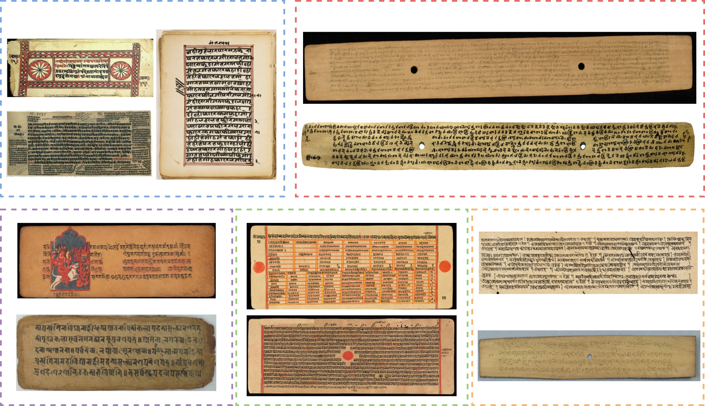
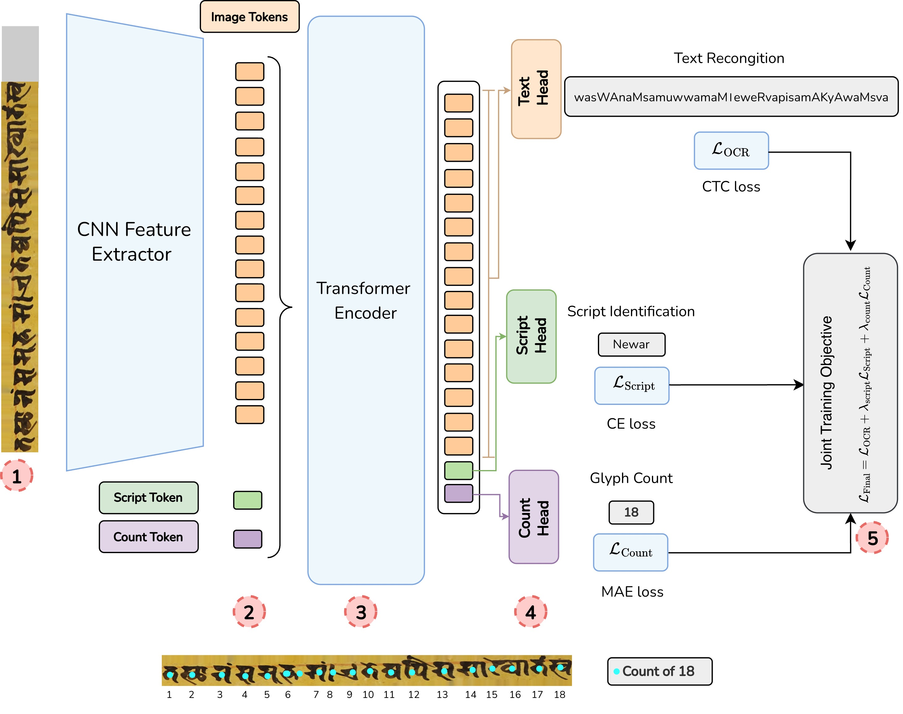
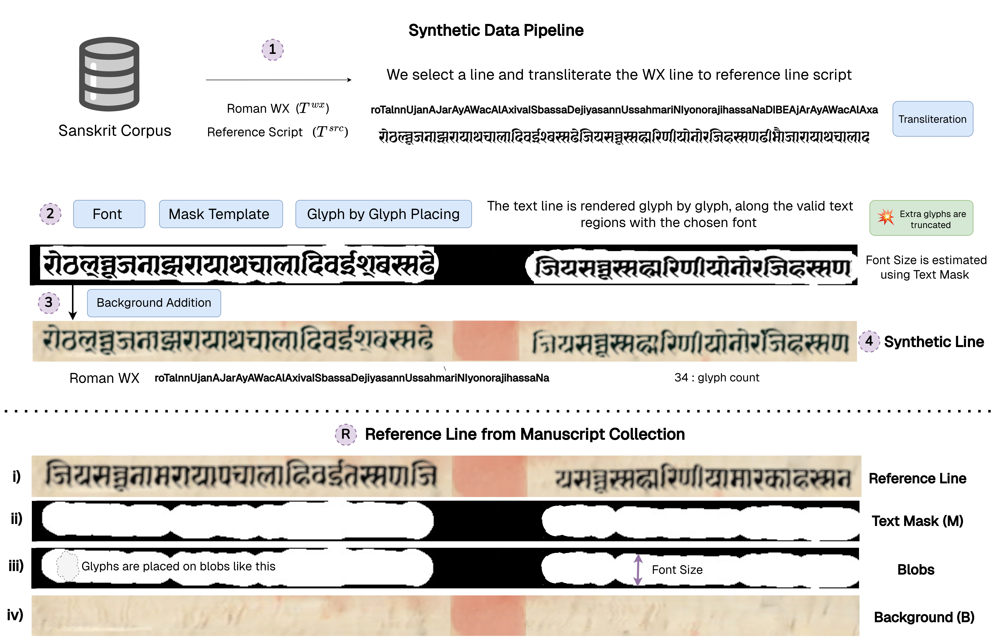
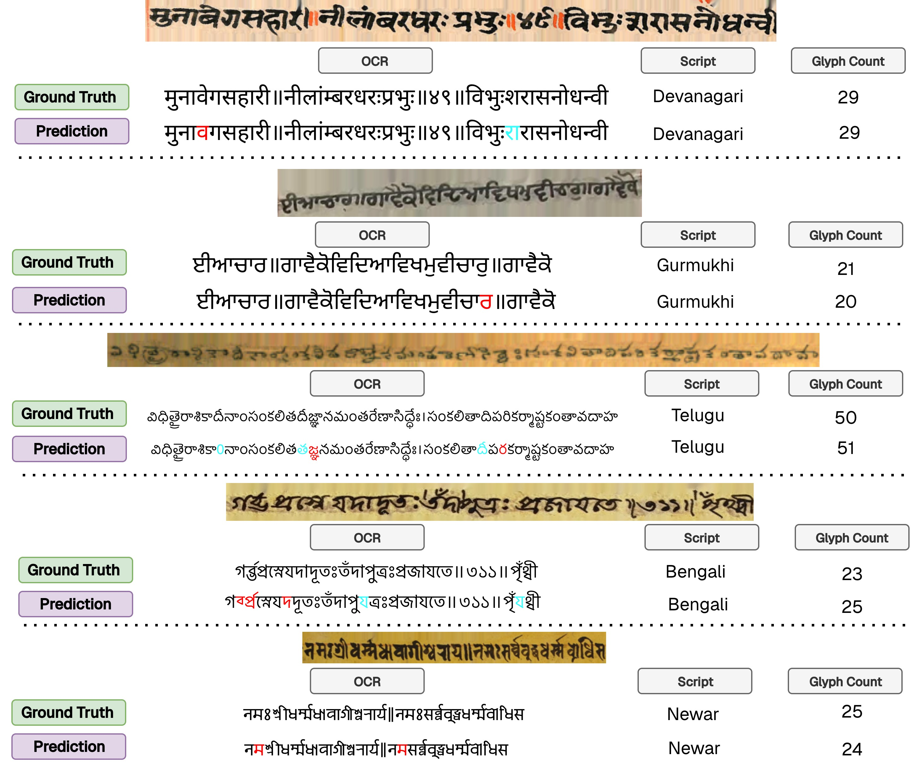
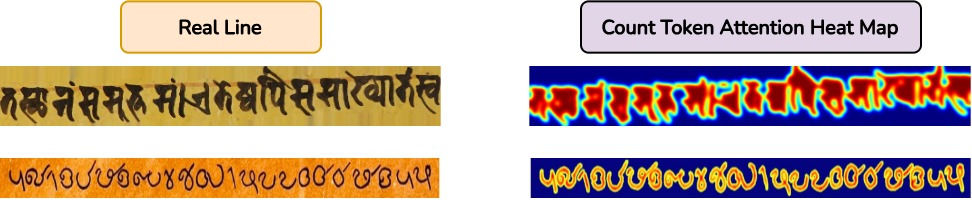

Optical character recognition (OCR) for handwritten Indic manuscripts is essential for large-scale digitization
and computational access to manuscript heritage. However, existing approaches are typically developed for one
script at a time and require substantial script-specific customization. This limits scalability and practical
deployment across diverse collections. We present UniLipi, a unified multi-script OCR model for handwritten
Indic manuscripts trained jointly across 13 Indic scripts within a single framework. UniLipi directly
handles realistic manuscript conditions, including extreme variation in line geometry, large variation in line
length, and partial interruptions caused by non-textual manuscript entities such as holes, stains, or pictorial
illustrations. To operate effectively under ultra low-resource conditions, the model leverages script-aware
synthetic manuscript data generation, substantially reducing reliance on large volumes of real annotated data.
Beyond historical manuscripts, we show that UniLipi serves as an effective foundational pretrained model — its
learned representations enable strong OCR performance for contemporary Indic handwriting and extend to several
non-Indic scripts including Tibetan, Italian, Latin, and Chinese. In addition to
transcription, UniLipi predicts script identity and per-line native character counts, supporting
practical manuscript cataloging workflows.
Diversity of Indic Manuscripts
Indic manuscripts span centuries, regions, and writing substrates. UniLipi targets 13 scripts drawn from
five regional traditions: North/Central Indian,
Southern Indian,
Himalayan/Buddhist,
Western Indian, and
Eastern Indian.

Diversity of manuscript styles across Indic script regions.
Examples of manuscript lines from multiple historical collections grouped by geographic and script traditions:
North/Central Indian,
Southern Indian,
Himalayan/Buddhist,
Western Indian, and
Eastern Indian.
The examples illustrate substantial diversity in writing substrates (palm leaf, paper), layout geometry,
stroke thickness, ink characteristics, and orthographic structure across scripts and regions.
Contributions
UniLipi — the first unified foundational multi-script OCR model for handwritten Indic scripts, trained
jointly across 13 distinct Indic scripts within a single framework.
A script-aware synthetic manuscript generation approach that reduces reliance on large volumes of real
annotated handwritten data.
An OCR system that, in addition to transcription, predicts script identity and per-line glyph count
as auxiliary supervision.
Method
UniLipi is a unified multi-task OCR model. Given a manuscript line image, it jointly predicts a text sequence in
the unified Roman WX representation, a script identity label, and a per-line
glyph count. The architecture is a hybrid CNN–Transformer with task-specific heads.

UniLipi architecture overview.
A CNN backbone extracts a sequence of image tokens from a padded line image. A learnable
script token and a count token are appended to the image-token sequence and encoded by a
Transformer with windowed self-attention. Image-token representations are decoded by a CTC-based text head
to produce a Roman WX transcription, while the latent task tokens feed dedicated heads for
script identification and glyph-count prediction. Training uses a joint OCR + script + count objective.
Joint training objective
The model is trained end-to-end with a multi-task loss combining CTC for text recognition, cross-entropy for
script classification, and mean absolute error for glyph count:
ℒ = ℒOCR + λscript · ℒscript + λcount · ℒcount
Joint supervision encourages the encoder to learn richer representations that capture textual content, script
identity, and structural length information together — improving transcription accuracy across diverse
manuscripts.
Reference-Conditioned Synthetic Data
Real annotated manuscript lines are extremely scarce for many Indic scripts. We generate large-scale synthetic
training lines by lifting appearance and geometric priors from real reference manuscripts — yielding
roughly 2.5M synthetic lines per script and 32.5M total across the 13 scripts.

Reference-conditioned synthetic line generation.(1) Sample a Roman WX text line and transliterate it into the target script.
(2) From a reference manuscript line, extract the writing mask, estimate font size and ink color,
then render glyphs sequentially within valid regions using script-specific fonts.
(3) Composite the rendered text onto a diffusion-inpainted clean background to preserve realistic
manuscript characteristics.
(4) Output the final synthetic line paired with its WX transcription, script label, and
glyph-count supervision.
Results — Overall Scores
Overall (weighted) performance of UniLipi across all 13 Indic scripts.
CER (%) for OCR transcription, Mono CER (%) for script-specific monolingual models, and Count-MAE for glyph
count prediction.
Setting
CER (%) ↓
Mono CER (%) ↓
Count-MAE ↓
UniLipi (Overall, weighted)
6.9
8.6
1.1
Across the 13 scripts, UniLipi attains an overall 6.9% CER, outperforming dedicated per-script
(monolingual) models at 8.6% CER — demonstrating the benefit of unified multi-script training.
Qualitative Results

Qualitative results of UniLipi on a representative script for each region.
Red marks deletions;
blue marks substitutions or additions.
Ablation Study
Ablation study of UniLipi. Each row modifies a single component while keeping all others identical;
the final configuration is highlighted.
Modified component
Default
CER ↓
Count-MAE ↓
IAST as vocab
Roman WX
11.0
1.7
Dedicated vocab per script
Roman WX
14.1
1.9
No script token
Auxiliary tokens
7.1
1.3
No count token
Auxiliary tokens
9.3
—
No script & count token
Auxiliary tokens
9.7
—
Encoder with 4 layers
6 layers
9.3
1.5
Encoder with 8 layers
6 layers
8.1
1.3
ℒOCR as Cross-Entropy
CTC loss
8.3
1.4
UniLipi (Final)
Default design
6.9
1.1
Count-Token Attention Heatmap

Attention structure induced from the count token in UniLipi. The heatmap illustrates the model's
ability to localize glyph-level structure, which serves both as auxiliary supervision and as a lightweight
quality-control cue at inference time.